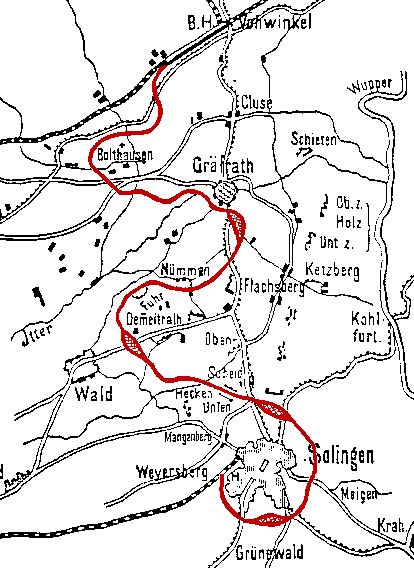

Krümelbahn
KrümelbahnDie Korkenzieherbahn

Die Skizze der Korkenzieherbahn aus der Zeit vor dem Bau zeigt den ursprünglichen Streckenverlauf; die Bahnhöfe Wald und Gräfrath wurde später etwas verlagert, ebenso der Streckenverlauf hinter Gräfrath zum Bahnhof Vohwinkel.
Die wohl - geographisch - interessanteste Strecke auf dem Solinger Stadtgebiet war die Korkenzieherbahn, so genannt nach ihrem Linienverlauf durch das Stadtgebiet vom Solinger Südbahnhof, später vom heutigen Hauptbahnhof über Solingen-Nord, Solingen-Wald und Solingen-Gräfrath nach Wuppertal-Vohwinkel.
Die Strecke der Korkenzieherbahn Vohwinkel - Gräfrath - Wald war 8,9km lang und wurde am 15. November 1887 zum ersten Mal von einem Zug befahren. Die restliche Teilstrecke von Wald zum Südbahnhof wurde am 12. Februar 1890 eröffnet und verlängerte damit die Korkenzieherbahn um 3,4km auf insgesamt 12,3km.
Der Personenverkehr auf der Korkenzieherbahn wurde offiziell am 2. November 1942 eingestellt ; der Güterverkehr zwischen Gräfrath und Wald wurde am 30. Juni 1967, zwischen Gräfrath und Vohwinkel am 1. Dezember 1989 eingestellt. Der letzte Güterzug zwischen Wald und dem Hauptbahnhof verkehrte am 31. März 1995, der Verkehr wurde am 15. März 1996 endgültig eingestellt, die Reste der Strecke anschließend umgehend demontiert.
Heute ist die Korkenzieherbahn ein beliebter Wanderweg: er verbindet über alte Brücken und Bahndämme den Haltepunkt Solingen-Mitte mit dem Stadtteil Gräfrath und endet kurz vor der A46.